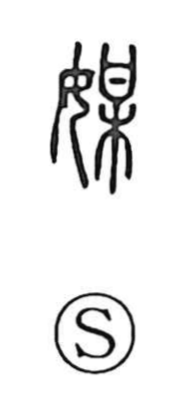

媒

Uncategorized
Kun: nakoudo, nakadachi | On: bai
matchmaker ・ mediator ・ intermediation
Explanation
A phono-semantic compound, 媒 sets 女 on the left to mark the sphere of women, and uses 某 on the right as the phonetic element giving bai. Shirakawa explains that 某 originally depicted a sacred petition tablet (the 日-shaped etsu) hung from a tree branch 木—an offering through which people sought and pondered the gods’ will—and it is the prototype of graphs meaning to consult or plan. With 女 added, the sense narrows to arranging matters for a woman, especially planning a marriage; hence the meanings ‘matchmaker’ and, by extension, mediation. The same idea of drawing parties together appears in the word 媒鳥, a decoy bird used to lure other birds near.